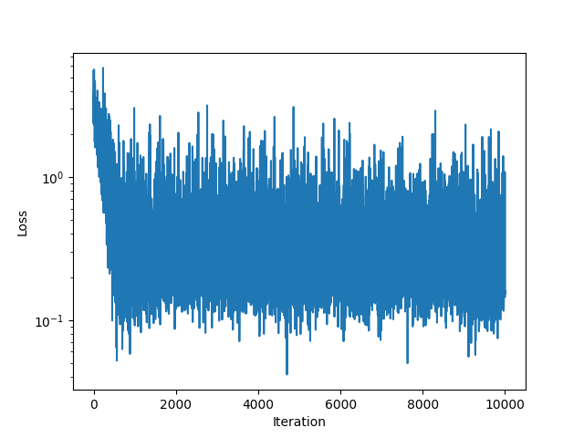
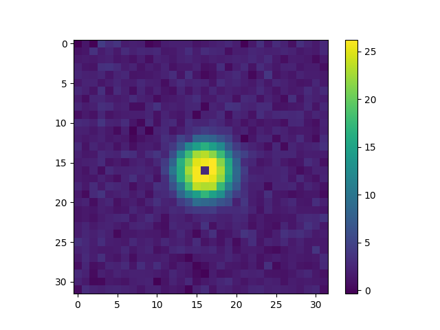

Note
Go to the end to download the full example code.
Convolution in 2D#
Import packages#
First, we import the packages we need for this example.
import matplotlib.pyplot as plt
import numpy as np
import torch
import pytorch_finufft
Let’s create a Gaussian convolutional filter as a function of x,y
Let’s visualize this filter kernel. We will be using it to convolve with points living on the \([0, 2*\pi] \times [0, 2*\pi]\) torus. So let’s dimension it accordingly.
shape = (128, 128)
sigma = 0.5
x = np.linspace(-np.pi, np.pi, shape[0], endpoint=False)
y = np.linspace(-np.pi, np.pi, shape[1], endpoint=False)
gaussian_kernel = gaussian_function(x[:, np.newaxis], y, sigma=sigma)
fig, ax = plt.subplots()
_ = ax.imshow(gaussian_kernel)
In order for the kernel to not shift the signal, we need to place its mass at 0. To do this, we ifftshift the kernel
shifted_gaussian_kernel = np.fft.ifftshift(gaussian_kernel)
fig, ax = plt.subplots()
_ = ax.imshow(shifted_gaussian_kernel)
Now let’s create a point cloud on the torus that we can convolve with our filter
Now we can convolve the point cloud with the filter kernel. To do this, we Fourier-transform both the point cloud and the filter kernel, multiply them together, and then inverse Fourier-transform the result. First we need to convert all data to torch tensors
fourier_shifted_gaussian_kernel = torch.fft.fft2(
torch.from_numpy(shifted_gaussian_kernel)
)
fourier_points = pytorch_finufft.functional.finufft_type1(
torch.from_numpy(points), torch.ones(points.shape[1], dtype=torch.complex128), shape
)
fig, axs = plt.subplots(1, 3)
axs[0].imshow(fourier_shifted_gaussian_kernel.real)
axs[1].imshow(fourier_points.real, vmin=-10, vmax=10)
_ = axs[2].imshow(
(
fourier_points
* fourier_shifted_gaussian_kernel
/ fourier_shifted_gaussian_kernel[0, 0]
).real,
vmin=-10,
vmax=10,
)
We now have two possibilities: Invert the Fourier transform on a grid, or on a point cloud. We’ll first invert the Fourier transform on a grid in order to be able to visualize the effect of the convolution.
convolved_points = torch.fft.ifft2(fourier_points * fourier_shifted_gaussian_kernel)
fig, ax = plt.subplots()
ax.imshow(convolved_points.real)
_ = ax.scatter(
points[1] / 2 / np.pi * shape[0], points[0] / 2 / np.pi * shape[1], s=2, c="r"
)
We see that the convolution has smeared out the point cloud. After a small coordinate change, we can also plot the original points on the same plot as the convolved points.
Next, we invert the Fourier transform on the same points as our original point cloud. We will then compare this to direct evaluation of the kernel on all pairwise difference vectors between the points.
convolved_at_points = pytorch_finufft.functional.finufft_type2(
torch.from_numpy(points),
fourier_points * fourier_shifted_gaussian_kernel,
isign=1,
).real / np.prod(shape)
fig, ax = plt.subplots()
ax.imshow(convolved_points.real)
_ = ax.scatter(
points[1] / 2 / np.pi * shape[0],
points[0] / 2 / np.pi * shape[1],
s=10 * convolved_at_points,
c="r",
)
To compute the convolution directly, we need to evaluate the kernel on all pairwise difference vectors between the points. Note the points that will be off the diagonal. These will be due to the periodic boundary conditions of the convolution.
pairwise_diffs = points[:, np.newaxis] - points[:, :, np.newaxis]
kernel_diff_evals = gaussian_function(*pairwise_diffs, sigma=sigma)
convolved_by_hand = kernel_diff_evals.sum(1)
fig, ax = plt.subplots()
ax.plot(convolved_at_points.numpy(), convolved_by_hand, ".")
ax.plot([1, 3], [1, 3])
relative_difference = torch.norm(
convolved_at_points - convolved_by_hand
) / np.linalg.norm(convolved_by_hand)
print(
"Relative difference between fourier convolution and direct convolution "
f"{relative_difference}"
)
/home/runner/work/pytorch-finufft/pytorch-finufft/examples/convolution_2d.py:142: DeprecationWarning: __array_wrap__ must accept context and return_scalar arguments (positionally) in the future. (Deprecated NumPy 2.0)
convolved_at_points - convolved_by_hand
Relative difference between fourier convolution and direct convolution 0.02535164429649562
Now let’s see if we can learn the convolution kernel from the input and output point clouds. To this end, let’s first make a pytorch object that can compute a kernel convolution on a point cloud.
class FourierPointConvolution(torch.nn.Module):
def __init__(self, fourier_kernel_shape):
super().__init__()
self.fourier_kernel_shape = fourier_kernel_shape
self.build()
def build(self):
self.register_parameter(
"fourier_kernel",
torch.nn.Parameter(
torch.randn(self.fourier_kernel_shape, dtype=torch.complex128)
),
)
# ^ think about whether we need to scale this init in some better way
def forward(self, points, values):
fourier_transformed_input = pytorch_finufft.functional.finufft_type1(
points, values, self.fourier_kernel_shape
)
fourier_convolved = fourier_transformed_input * self.fourier_kernel
convolved = pytorch_finufft.functional.finufft_type2(
points,
fourier_convolved,
isign=1,
).real / np.prod(self.fourier_kernel_shape)
return convolved
Now we can use this object in a pytorch training loop to learn the kernel from the input and output point clouds. We will use the mean squared error as a loss function.
fourier_point_convolution = FourierPointConvolution(shape)
optimizer = torch.optim.AdamW(
fourier_point_convolution.parameters(), lr=0.005, weight_decay=0.001
)
ones = torch.ones(points.shape[1], dtype=torch.complex128)
losses = []
for i in range(10000):
# Make new set of points and compute forward model
points = np.random.rand(2, N) * 2 * np.pi
torch_points = torch.from_numpy(points)
fourier_points = pytorch_finufft.functional.finufft_type1(
torch.from_numpy(points), ones, shape
)
convolved_at_points = pytorch_finufft.functional.finufft_type2(
torch.from_numpy(points),
fourier_points * fourier_shifted_gaussian_kernel,
isign=1,
).real / np.prod(shape)
# Learning step
optimizer.zero_grad()
convolved = fourier_point_convolution(torch_points, ones)
loss = torch.nn.functional.mse_loss(convolved, convolved_at_points)
losses.append(loss.item())
loss.backward()
optimizer.step()
if i % 100 == 0:
print(f"Iteration {i:05d}, Loss: {loss.item():1.4f}")
fig, ax = plt.subplots()
ax.plot(losses)
ax.set_ylabel("Loss")
ax.set_xlabel("Iteration")
ax.set_yscale("log")
fig, ax = plt.subplots()
im = ax.imshow(
torch.real(torch.fft.fftshift(fourier_point_convolution.fourier_kernel.data))[
48:80, 48:80
]
)
_ = fig.colorbar(im, ax=ax)
- 
- 
Iteration 00000, Loss: 3.0631
Iteration 00100, Loss: 2.4286
Iteration 00200, Loss: 1.1522
Iteration 00300, Loss: 1.1646
Iteration 00400, Loss: 2.5064
Iteration 00500, Loss: 1.5273
Iteration 00600, Loss: 0.6250
Iteration 00700, Loss: 0.3812
Iteration 00800, Loss: 0.7302
Iteration 00900, Loss: 0.2382
Iteration 01000, Loss: 0.2265
Iteration 01100, Loss: 0.2691
Iteration 01200, Loss: 0.3496
Iteration 01300, Loss: 0.2065
Iteration 01400, Loss: 0.2455
Iteration 01500, Loss: 0.2089
Iteration 01600, Loss: 0.3406
Iteration 01700, Loss: 0.2549
Iteration 01800, Loss: 0.2508
Iteration 01900, Loss: 0.3798
Iteration 02000, Loss: 0.2318
Iteration 02100, Loss: 0.1519
Iteration 02200, Loss: 0.1855
Iteration 02300, Loss: 0.5736
Iteration 02400, Loss: 0.5329
Iteration 02500, Loss: 0.3214
Iteration 02600, Loss: 0.2928
Iteration 02700, Loss: 0.3313
Iteration 02800, Loss: 0.2698
Iteration 02900, Loss: 0.1951
Iteration 03000, Loss: 0.3175
Iteration 03100, Loss: 0.1815
Iteration 03200, Loss: 0.4317
Iteration 03300, Loss: 0.2332
Iteration 03400, Loss: 0.1141
Iteration 03500, Loss: 0.2738
Iteration 03600, Loss: 0.8844
Iteration 03700, Loss: 0.3819
Iteration 03800, Loss: 0.3370
Iteration 03900, Loss: 0.1624
Iteration 04000, Loss: 0.3616
Iteration 04100, Loss: 0.1929
Iteration 04200, Loss: 0.1788
Iteration 04300, Loss: 0.3214
Iteration 04400, Loss: 0.1094
Iteration 04500, Loss: 0.2928
Iteration 04600, Loss: 0.1789
Iteration 04700, Loss: 0.2060
Iteration 04800, Loss: 0.7645
Iteration 04900, Loss: 0.2288
Iteration 05000, Loss: 0.2417
Iteration 05100, Loss: 0.3978
Iteration 05200, Loss: 0.0938
Iteration 05300, Loss: 0.1879
Iteration 05400, Loss: 0.4689
Iteration 05500, Loss: 0.1722
Iteration 05600, Loss: 0.2085
Iteration 05700, Loss: 0.1926
Iteration 05800, Loss: 0.3311
Iteration 05900, Loss: 0.1670
Iteration 06000, Loss: 0.2194
Iteration 06100, Loss: 0.2344
Iteration 06200, Loss: 0.2325
Iteration 06300, Loss: 0.4041
Iteration 06400, Loss: 0.2492
Iteration 06500, Loss: 0.2746
Iteration 06600, Loss: 0.1514
Iteration 06700, Loss: 0.3190
Iteration 06800, Loss: 0.5207
Iteration 06900, Loss: 0.1167
Iteration 07000, Loss: 0.3730
Iteration 07100, Loss: 0.4862
Iteration 07200, Loss: 0.2018
Iteration 07300, Loss: 0.2163
Iteration 07400, Loss: 0.2765
Iteration 07500, Loss: 0.2773
Iteration 07600, Loss: 0.4174
Iteration 07700, Loss: 0.2125
Iteration 07800, Loss: 0.2311
Iteration 07900, Loss: 0.5790
Iteration 08000, Loss: 0.5696
Iteration 08100, Loss: 0.2225
Iteration 08200, Loss: 1.1715
Iteration 08300, Loss: 0.1278
Iteration 08400, Loss: 0.1849
Iteration 08500, Loss: 0.2257
Iteration 08600, Loss: 0.2808
Iteration 08700, Loss: 0.5665
Iteration 08800, Loss: 0.3757
Iteration 08900, Loss: 0.6134
Iteration 09000, Loss: 0.2263
Iteration 09100, Loss: 0.5041
Iteration 09200, Loss: 0.2298
Iteration 09300, Loss: 0.3916
Iteration 09400, Loss: 0.2168
Iteration 09500, Loss: 0.2280
Iteration 09600, Loss: 0.2622
Iteration 09700, Loss: 0.9283
Iteration 09800, Loss: 1.1408
Iteration 09900, Loss: 0.7503
Total running time of the script: (1 minutes 8.720 seconds)